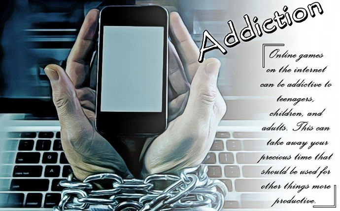

Introduction of technology
Nowaday in this 21 first century all the people are depend upon the Internet technology. there is no work which is not done by the people without using the technology. all round the people are using the technology.people are using the technology into the small and small work like for calculation, for creating the new thing, for making the food, for travalling, while paying to someone. all this thing are depend upon the technology.the world is depend upon the technology. without the technology nobody can live. technology is used in the many field like bussines, education, science experiment, hospital, food, cloth, weather forecasting. in all these field tecnology is used. with the help of the technology all the filed heve many benefits. all the people are taking the benefit of the technology. without the technology human being cannot live a single second. all the survival are depend on the technology. it helps to know the condition of the weather. when people have to carry the umbralla. it help people to make their life more easier. technology play very more important role in the life of the people.it help to change the life of the people from the past till now. there is dramastrict change in the life of the people. in the past there is nothing to make the life of the people easier but now the life of the people are change due to the help of the technology......
Technology

Positive aspect of technology
There are many positive aspect of the technology. some of these are given as .Social aspects,communicatio
News and entertainment.
Economic aspects,E-Commerece,E-Health,Educational Resources. Internet technology play very important role in the development of the society. it help to change the social aspect. when the people are in the past time than they have to face the many problem. they are not getting the good education and pure water to drink but now all the people are geeting the pure water and all the childern are getting the quality education. the people are living vary difficult life in the past but now all the people are lifing very happy life and they are getting all the benefits of the nature because of the technology.in the past when the people are living far than they donot have any technology to talk with each other but nowaday all the people are getting the facilities that when there are far from their familiy but they are able to talk with their family member. in the past the people have to write the letter to their family member and that letter is deliver to the family member by the postman. it took month of time to deleiver that letter to the family member. there is no facilities of the communication but now thre is many facilities of the communication. in the past there is no facilities of the news and entertainment. the people have to do the dram to get entertainment but now there is the facilities of the film and the halls where people go and entertain them. so technology is very important for the people. all the student are getting the quality education and they can get the proper education by the tecnology.
Economic
Negative aspect of technology
Technology have negative aspect also. due the tecnology the privacy of the people are get out by the fraud. the people are getting the the black-mail by the fraud people. due to the technology there are many faculities are available and due to that facilities the privacy of the people are getting viral. due to the technology the people id are getting hacked and they have to face alot of the problem. the people are hacking the password of the peopel loptop and so on. the people are not getting secure while using the technology. due to the unwanted technology the peopel computer are suffer from the problem of virus. some of the technology are unsocailized and people have to face alot of problem. the pravicy of the people are not secured. the people are getting more confidence to do fraud in the country. due to the use of the rechnology tere are many negative energy sre created and due to that energy many people ahve to loose the life. during the time war the people are using the atom boomb and due to that negative energy all the living being have to face many problem.
Internet-Addiction
Conclusion
Thus technology play positive as well as negative role in the world. many people are getting benefits and many people are facing alot of problem. in this developing world technology is vary important. the population of the world is increasig in the rocket speed so to control the negative impact of the increasing population the technology is very important. it help to control the increasing population. technology help to increase the knowledge of the people. technology helps to increase the health status of the people. when there is many population than the health of the people will be effected so technology helps to make the medecine, and that medecine help the people to recover from the diseases. all the youth are the future of the world so technology help the youth to increase their creativity. due the help of technology the poeple are getting the information about the each counter. but the technology have the negative impact. it harms the living being. when the people are using the internet technology then many living being are get affected due to the radition. that high radition affect the birds and many bird are dispaapears from the world and the palnt are also getting effective.so on other hand technology helps to increase the number the trees.so at last technology have more positive aspect in compare to the negative aspect.
Use of technology

copyright@dasbarsha, 2020